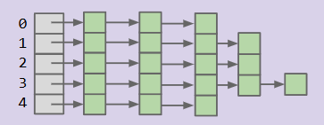

Chapter7 Hash Table
我们已经学习过几种可以高效搜索的数据结构，比如 BST，2-3 Tree，LLRB等等，他们都支持 add 操作和 contain 操作，但是它们都有一些局限性：
- 元素之间需要是可比较的，但我们希望能够支持任意对象，无需比较。
- 这些树的搜索、插入复杂度为 \(\Theta(\log n)\)，我们能否实现常数时间的复杂度呢？
我们需要一种新的方法——哈希(Hashing)
First attempt¶
为了先解决时间复杂度的问题，我们能很容易的想到一个粗浅的想法——直接用数据本身作为数组的索引，称之为 DataIndexedIntegerSet。比如假设假设只考虑 int 的情形，我们可以创建一个 boolean 数组，默认全为 false，以 true 表示该整数已经添加，false 表示其不存在。add(int x) 操作只需要将数组的 x 索引对应的元素设置为 true，contains(int x) 操作只需要检查 x 索引对应的元素是否为 true
但很显然这个想法有着诸多致命的缺陷：
- 空间浪费
- 只支持整数，无法直接存储字符串、类对象等等
word-insertion¶
我们提到 DataIndexedIntegerSet 只支持整数，那么这个小节我们试着支持对字符串的插入。有一个直接的想法是，我们可以在字符串和数字之间建立一个映射，将每个字符串映射为数字作为其在数组中的索引。但这样的映射必须是唯一的，不能产生 collision（碰撞）。
我们可以从十进制中获得灵感，一个十进制数 \(5149=5\times 10^3+1\times 10^2+4\times 10+9\times 10^0\)，我们完全可以将字母与数字之间做对应，例如 a=1,b=2,...，注意这里我们没有使用0，这是因为可能出现 00324 的结构，在十进制中没有意义。举个例子，对于单词 dog，有 d=4,o=15,g=7，所以可以这样找到 dog 所对应的数字：
$$
\text{dog} = 4\times26^2+15\times26^1+7\times26^0=3101
$$
也即 3101 为 dog 所对应的索引。
public static int letterNum(String s, int i){
char ithChar = s.charAt(i);
if(ithChar < 'a' || ithChar > 'z'){
throw new IllegalArgumentException("Only lowercase a-z allowed");
}
return ithChar - 'a' + 1; // 将字母转换成其对应的数字,a=1,b=2,...
}
public static int englishToInt(String s){
int intRep = 0;
for(int i = 0; i < s.length(); i++){
intRep = intRep * 26;
intRep += letterNum(s,i);
}
return intRep;
}
englishToInt(String s) 的时间复杂度为 \(O(s)\)，其中 \(s\) 是字符串的长度，通常来说 \(s\) 较小，所以我们可以将其视时间复杂度视为常数，故add/contains 时间复杂度为常数
string-insertion and overflow¶
我们甚至还可以支持中文，例如使用 Unicode，但是字符码高达40959，如果我们将40959作为基数，这样的空间要求太高了，所以某种意义上，也许我们会放弃映射的唯一性要求，被迫接受 collision 。
并且需要指出，Java中的 int 实际上是有符号的 32-bit 的 int，所以它的范围是 \(-2^{31}\sim 2^{31}-1\)，也即 $-2147483648\sim 2147483647 $，当结果超过这个范围时就会发生类似于求模的循环，也即最大值+1=最小值，最小值-1=最大值，这是因为Java的 int 运算在底层其实就是模 \(2^{32}\) 的。溢出不是大问题，我们仍然能够实现将字符串转化为 int 的目标，但溢出会导致 collision 的发生，比如 melt banana 和 subterrestrial anticosmetic 在经过 base-126 的计算后溢出结果相同。
所以我们不应该去避免 collision，而是要去处理 collision
Hash Codes¶
在计算机科学中，我们把将对象转化为 int 这样的过程叫做计算哈希码(hash code)。Java 中的每个对象都有一个默认的 .hashcode() 方法，其通过确定这个 object 在内存中的位置，并使用该内存地址进行转换，这种方法可以为每个 Java 对象提供一个唯一的哈希码；有的时候我们也会自己编写 hashcode 方法。
Hash Code 的属性¶
不是所有将对象转为 int 的转换都叫做 hash code，其必须满足以下几点必要属性：
- 输出必须为
int - 一致性：对同一次对象多次调用，返回的值总是相同的
- 相等性，如果有
a.equals(b)（如果用==地址相同哈希码显然相同，这里我们是希望值相同的时候拥有相同的哈希吗），则一定有a.hashCode == b.hashCode()（反之不一定，不同的对线够可以同hash）
一般来说，一个好的哈希码还应该是 "distribute items evenly" 的，也就是均匀分布的，Java 内置的哈希码计算分布均匀。
Handling Collisions¶
这一小节我们介绍如何处理 collision，核心思路是修改我们的数组，使得其元素不仅仅是一个普通的元素，而是包含其他数据结构，例如 LinkedList：如果我们得到一个元素，其哈希码为 \(h\)，我们分两种情况考虑：
- 如果当前索引为空，我们就在此创建新的链表并添加该元素
- 如果已有列表存在，我们先在列表中检查元素是否存在（避免重复），如果不存在就将其添加到链表末尾。
Tip
这种方法我们称之为链式寻址
Concrete workflow¶
对于 add 操作来说：
- 首先获取元素的哈希码
- 如果索引中没有该元素，我们就创建一个新的列表，并将该元素置于列表中
- 如果索引中已经有一个列表，就在列表中检查元素是否已经存在，如果没有就将其添加到列表中
对于 contains 操作：
- 我们首先获取元素的哈希码
- 如果数组对应索引处为空，就返回
false - 否则我们就检查该索引处的 List 中的所有元素，如果存在就返回
true，如果不存在就返回false
Runtime Complexity¶
插入操作(add)和查找操作(contain)的时间复杂度为 \(\Theta(Q)\)，这里的 \(Q\) 是最长的链表的长度，这是因为两者都需要遍历链表，add 需要检查重复，contain 需要查找元素。最坏情况下，如果所有的 \(n\) 个元素的哈希码相同，就会全部存入同一链表，此时复杂度退化至 \(\Theta(n)\)。
Solving space¶
在学会如何处理 collision 之后，我们可以解决空间存储的问题，一个不错的想法是取模，比如在我们得到 hash code 之后，我们对 100 取模，得到 0-99 范围内的一个索引，使得数组的容量大大减小，但需要注意的是，同一索引的链表会更长，导致 \(Q\) 增大，这在一定程度上也会降低时间效率。
HashTable¶
最终我们可以得到一种新的数据结构——HashTable：
- 输入元素被哈希函数(hash function)转换为整数，然后它们使用取模运算符被转化为有效索引，数组的每个索引处存储链表，碰撞元素均存入对应链表
contain以类似的方式工作，先确定有效索引，然后在相应的 LinkedList 中查找该项目
Runtime¶
考虑这样一个场景，我们有一个 5 buckets 的哈希表，链表长度 \(Q\) 的增长速度对于 \(N\) 是怎样的，如下图所示：

答案是 \(Q\) 是 \(\Theta(N)\) 的。因为在最好的情况下，最长的列表的长度会是 \(\frac{N}{5}\)，而在最差的情况下会变成 \(N\)，所以 \(Q\) 是 \(\Theta(N)\) 的，这样的时间复杂度是线性的。如果我们将 bucket 的数量记作 \(M\)，元素的总数量为 \(N\)，我们能否改进我们的设计使得 \(\frac{N}{M}\) 是常数时间复杂度的呢？我们有两个优化方案。
我们定义负载因子为 \(\frac{N}{M}\)，这直接决定了链表的平均长度。
方案一：动态扩容哈希表
我们可以动态调整桶的数量 \(M\)，控制负载因子不超过某个阈值，从而保证运行效率。
扩容策略如下：
- 触发条件：当负载因子超过预设阈值（例如1.5）的时候触发扩容
- 扩容操作：
- 我们创建新的哈希表，桶的数量为旧表的2倍（\(2M\)）
- 遍历旧表的所有元素，逐个重新插入新表（因为 \(M\) 发生改变，模运算的结果也会改变，元素的索引需要重新计算），插入新表的时候由于旧表元素无重复，所以我们可以直接加在链表的头部而无需重新检查，确保单元素的插入时间复杂度为 \(\Theta(1)\)
扩容的整体时间复杂度为 \(\Theta(N)\)（重新插入 \(N\) 个元素，每个的时间复杂度为 \(\Theta(1)\)），扩容后若元素分布均匀，负载因子 \(\frac{N}{M}\) 维持在常数范围内，此时 add 和 contains 的平均运行时优化为 \(\Theta(1)\)
方案二：改进哈希码
这个方案实现起来比较困难。动态扩容的效果依赖于元素在桶中是否均匀分布，而均匀分布的核心前提是高质量的哈希码，哈希码的设计有以下的一些经验：
采用我们前面提到的基数策略生成哈希码，基数选择小质数，可以避免因整数溢出导致的碰撞，并且让不同元素的哈希码尽可能随机，减少集中分布。